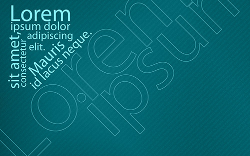
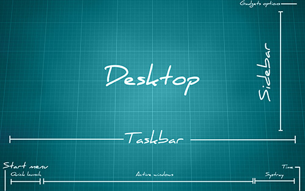

Web Tasarım İlkeleri
Tasarıma başlamadan önce ve tasarım sırasında, yapacağımız sitenin standartlarını yükseltmek adına uymamız gereken kriterleri "web tasarım ilkeleri" olarak tanımlayabiliriz. Bu prensiblere uyulmadığı takdirde ciddi bir prestij kaybı, olumsuz geribildirimler ve ziyaretçi sayısında düşüşlerle karşılaşabiliriz. Bu tür olumsuzlukları önlemek için web tasarım ilkelerinin iyi bir şekilde bilinmesi ve uygulanması tasarlayacağımız sitemizin geleceği açısından hayatî bir öneme sahiptir.
İçerik
Bir web sitesini oluşturan en temel unsur içeriktir. İçerikten kastımız sitedeki metinler ve konu ile alâkâlı görsellerdir. 90'lı yıllarda CERN'de çalışan internetin kurucusu Tim Berners-Lee'nin asıl amacı bilim insanlarının makalelerini tüm dünyaya duyurabilecek bir sistem geliştirmekti. O zamandan bu yana bir web sitesinin temel amacı içeriği tüm dünya ile paylaşmak olmuştur.
Bir siteyi tasarlamaya başlamadan önce daima içeriğe göre planlama yapmalısınız. İçeriği düşünmeden sadece tasarım görselliğini önplânda tuttuğunuz siteler size felaket getirebilir.
İçeriğin bir diğer önemi arama sonuçlarında bulunabilmektir. Arama motorları sitelerinin tasarımlarını değil, içeriklerini tararlar, web sitelerini indekslerler ve kullanıcılara sunarlar. Sizin bu siteyi nasıl bulduğunuz içeriğin önemine en açık kanıttır. Şunu da unutmayın ki, bir kullanıcı arattığı bir çift kelime ile bir sitenin senelerce müdavimi olabilir.
Tasarım
Bir web sitesinin içerikten sonra gelen en önemli kriteri tasarımdır. Tasarımdan kastımız sitenin logosunun, menüsünün, içerik alanının ve görsellerinin sayfanın neresinde duracağı, ayrıca sitenin renk ve tipografi düzeninin nasıl olacağıdır. Ziyaretçinin site hakkındaki ilk izlenimleri içerikten önce site tasarımı yönündedir. Örneğin; bir kullanıcı bir siteyi ziyaret ettiğinde gözü ilk olarak sitenin sol üst köşesindeki logoyu arar. Tasarım ve renk düzenine kısa bir bakış attıktan sonra içerik alanına yoğunlaşır. Bu işlem saniyeler içerisinde yaşanır. Bu yüzden tasarım bazı yönlerden içerikten daha önemlidir.
Tasarıma başlanmadan önce mutlaka sitenin mizanpajı (layout'u) kâğıda dökülmelidir. Logo, menü gibi site bileşenlerinin sayfadaki konumu kabataslak belirlenmelidir. Bu şekilde hayal gücümüzü de kullanarak tasarlayacağımız siteyi zihnimizde canlandırabilir ve daha rahat koda dökebiliriz. Her şeyi önceden tasarlayıp kâğıda dökmeliyiz ki daha sonra bir ekleme yapmak zorunda kalmayalım. Bunu yapmadığımız takdir de büyük zaman kayıplarına katlanmak zorunda kalabiliriz.
İşlevsellik ve Kullanılabilirlik
İçerik ve tasarımdan sonra gelen en önemli kriterlerdir. İşlevsellik site sayfalarına "erişim kolaylığı", kullanılabilirlik ise sitenin "kullanıcı dostu" olması olarak özetlenebilir.
Kullanıcı siteyi ziyaret ettiği zaman aradığı içeriği bulmak için sayfa bağlantılarını kullanılır. Bunu çoğunlukla sitenin menüsünden yapar. Eğer aradığı sayfaya çok geç ulaşıyorsa ya da ulaşmakta bazı zorluklar yaşıyorsa sitede işlevsellik sorunundan söz edilebilir.
2000'li yılların ortalarında tüm dünyada Web 2.0 adlı bir olgu duyulur oldu. Web 2.0, internetin evrimleşmesinin açık bir göstergesidir ve dinamik sitelerin standartlarını belirlemiştir. Web 2.0 ile gelen temel standartlardan biri de işlevselliktir. Eğer bir kullanıcı sitenin herhangi bir sayfasında aradığı başka bir sayfaya üç tıklamadan fazla bir şekilde ulaşıyorsa o site işlevsellik yönünden zayıftır. Bu sorunu çözebilmek için birçok sitede tüm sayfaların bir liste halinde olduğu "site haritaları" kullanılmıştır.
Kullanılabilirlik bir sitede ziyaretçinin ne kadar rahat vakit geçirdiği ile ilgilidir. Ziyaretçi "Menüyü rahat kullanabiliyor mu?", "Yazılar okunaklı mı?", "Renk düzeni gözü yoruyor mu?" gibi soruların cevapları kullanılabilirlikle ilgilidir. Kullanılabilirlikle birlikte süregelen bazı kriterler vardır. Bunlardan en bilindikleri şöyledir:
- Site en geç 7 - 13 saniye arası bir sürede açılmalı. Bu süre içinde açılmayan siteler kullanıcılar tarafından kapatılmaya başlanmaktadır.
- Çok fazla içerik varsa mutlaka site içi arama motoru olmalı.
- Sitenin her sayfasından mutlaka anasayfaya bağlantı verilmeli.
- Site yöneticisi ile irtibat kurulabilecek bir iletişim bağlantısı verilmeli.
- Uzun metinli, yüksekliği fazla sayfalarda "başa dön düğmesi" gibi sayfa başına kolay bir şekilde ulaşmamızı sağlayan özellikler bulunmalı.
- Menülerin kullanımı kolay olmalı ve kullanıcıyı yormamalı.
- Renk düzeni gözü yormamalı ve uygun seçimler yapılmalı.
- Tipografide yumuşak fontlar seçilmeli ve yazılar okunaklı olmalı.
Tüm bu özellikler sitenin kullanılabilirlik derecesini belirlemektedir.
Biçim
Biçimi tasarım ve içeriğin bütünleşmesi olarak düşünebiliriz. Renk düzeni, okunabilirlik, içerik - tasarım ilişkisi biçimle ilgilidir.
Renk Düzeni: Tasarlananacak sitenin renk düzeni içerik ile uyumlu olmalıdır. Bununla birlikte eğer arkaplan (artalan) rengi koyu ise içerik alanında açık renkler seçilmelidir. Kırmızı, turuncu, sarı gibi sıcak renkler kullanıcının gözünü çok çabuk yorduklarından mümkün olduğunca az kullanılmalı, bunun yerine mavi, yeşil, mor, turkuaz gibi soğuk renkler tercih edilmelidir. Site siyah - beyaz gibi nötr renkler üzerine şekillendirilecekse sıcak ve soğuk renklerin kullanımı kullanıcı üzerinde daha etkili olmaktadır. Bu yüzden bu renklerin kullanımında daha dikkatli olunmalıdır.
Sayfalar arası geçişlerde arkaplan rengi gibi sabit bileşenler aynı renkte olmalı, her sayfada farklı renkler kullanılmamalıdır.
Okunabilirlik: Sitede kullanılacak içerik tipografi ile uyumlu olmalıdır. Font seçiminde Times New Roman gibi keskin hatlı ve eski bir site izlenimi uyandıran fontlar seçmek yerine Open-Sans gibi modern, yumuşak hatlı seçimler yapılmalıdır. Bu şekilde yazıların okunaklığı artmakta ve kullanıcının gözü yorulmamaktadır.
Font büyüklüğü ne çok büyük ne de çok küçük olmalıdır. 12px - 14px, bir site için ideal font büyüklükleridir. 11px, 13px gibi tek sayılı font büyüklükleri tercih edilmemelidir. Başlıkların büyüklüğü içerik ile uyumlu olmalıdır.
İçerik hizalamaları da bir sitenin genel görünümünü etkiler. Hizalamada sola ya da her iki yana yaslama kullanılabilir. Uzun içerik yazılarında ortalı hizalama kullanılmamalıdır.
Bu düğme ile hizalamanın sayfada nasıl durduğunu test edebilirsiniz.
İçerik ile tasarım arasında bir uyum bulunmalıdır. Yazılar içinde bulunduğu alanın sınırlarına çok yakın olmamalı, aralarında belirli bir boşluk bulunmalıdır. Satır yükseklikleri ise font büyüklüğüne göre uygun seçilmelidir.
Okunabilirliği etkileyen bir diğer önemli unsur ise uzun metinli yazılarda görsellerin kullanılmasıdır. Bu şekilde kullanıcının metni okumaktan sıkılması önlemiş olur. Görsellerin seçimi ise metin ile ilgili olmalı, içerikle uyumsuz resimler kullanılmamalıdır.
Güncellik
Hazırlanacak sitenin güncel platformda çalışabilmesi için eski teknolojiler kullanılmamalıdır. Günümüzde hemen hemen her site HTML5, CSS3 gibi son nesil teknolojiler ile yapılmaktadır. Bu yüzden eski sürüm HTML ve CSS teknolojileri yerine yeni nesil sürümleri tercih edilmelidir.
Sitenin footer kısmındaki site güncellik yılını gösteren bildirim her sene düzenli olarak güncellenmeli, yapılamıyorsa "2007'den beri" gibi kullanımlar tercih edilmelidir.
Uygunluk ve Güvenilirlik
Web sitesinin internet için uygun olup olmadığı baştan belirlenmelidir. Alan adı çok uzun seçilmemeli ve akılda kalıcı olmalıdır.
Site ziyaretçide bir güven hissi uyandırmalı, mümkün olduğunca imlâ hatası yapılmamalı ve özgün içerik kullanılmalıdır. Kullanıcı gözünde saygınlığı düşen bir sitenin prestijini koruyabilmesi oldukça zordur.
Uyumluluk
Tasarlanacak site tüm platformlarda sorunsuz çalışabilmelidir. Tasarım sırasında tarayıcı uyumlulukları aşama aşama test edilmelidir. Eğer eski platformlarda çalışması istenen bir site hazırlanacaksa yeni nesil teknolojilerin bazı özelliklerinden feragat edilmelidir. Sadece yeni nesil platformlarda çalışması planlanan bir site hazırlanacaksa Internet Explorer 9 gibi eski nesil tarayıcılarda site test edilmemeli, bunun yerine IE10 tercih edilmelidir.
Site mobil cihazlar için de uyumlu olacaksa Samsung ve Apple telefonlarında birebir test edilmeli, bunun için hazırlanmış test sitelerine tam anlamıyla güvenilmemelidir. Responsive sitelerin hazırlanması standart sitelere göre daha zahmetli bir iştir ve her platform için uygun media query'ler seçilmelidir.
Web tasarım ilkeleri genel hatlarıyla bu şekildedir. Tasarlanacak sitenin bu prensiplere azami ölçüde uyması standartların sağlanabilmesi adına önemlidir.